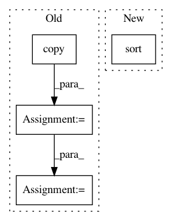

b73fc0c21ea55c7d3357fbf633944e1e67db8bdf,theanolm/scoring/latticedecoder.py,LatticeDecoder,decode,#LatticeDecoder#Any#,199
Before Change
key=lambda token: token.total_logprob,
reverse=True)
for link in node.out_links:
new_tokens = [self.Token.copy(token) for token in node_tokens]
for token in new_tokens:
token.ac_logprob += link.ac_logprob
token.lat_lm_logprob += link.lm_logprob
if not link.word.startswith("!"):
word_id = self._vocabulary.word_to_id[link.word]
self.append_word(new_tokens, word_id, lm_scale, wi_penalty)
tokens[link.end_node.id].extend(new_tokens)
After Change
node_tokens, link, lm_scale, wi_penalty)
tokens[link.end_node.id].extend(new_tokens)
// Leave only 100 best tokens at each node.
tokens[link.end_node.id].sort(
key=lambda token: token.total_logprob,
reverse=True)
tokens[link.end_node.id][100:] = []
nodes_processed += 1
if nodes_processed % math.ceil(len(sorted_nodes) / 20) == 0:
In pattern: SUPERPATTERN
Frequency: 3
Non-data size: 4
Instances
Project Name: senarvi/theanolm
Commit Name: b73fc0c21ea55c7d3357fbf633944e1e67db8bdf
Time: 2016-07-31
Author: seppo.git@marjaniemi.com
File Name: theanolm/scoring/latticedecoder.py
Class Name: LatticeDecoder
Method Name: decode
Project Name: catalyst-cooperative/pudl
Commit Name: a70d7c493fdcac1a1e34273c269e18210637b990
Time: 2017-11-08
Author: zane.selvans@catalyst.coop
File Name: pudl/outputs.py
Class Name:
Method Name: organize_cols
Project Name: WZBSocialScienceCenter/tmtoolkit
Commit Name: 9def69a805132ff7549744b5b30a2fa7531fa405
Time: 2019-06-12
Author: markus.konrad@wzb.eu
File Name: tmtoolkit/preprocess/_tmpreproc.py
Class Name: TMPreproc
Method Name: tokens_dataframe